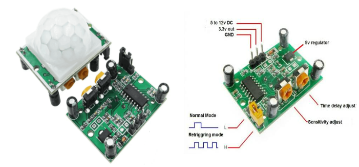
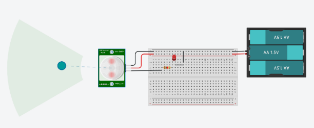
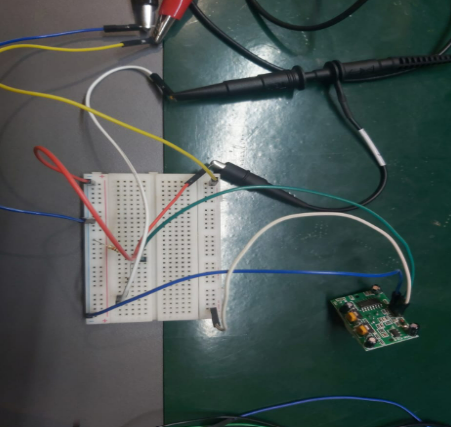
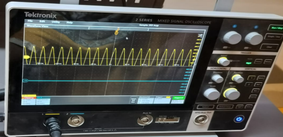
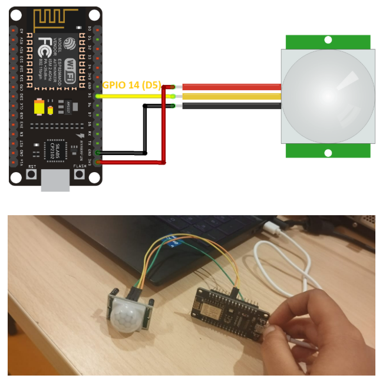
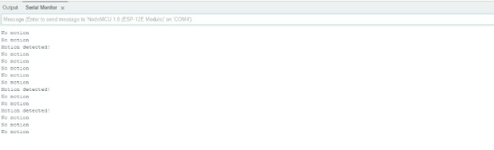
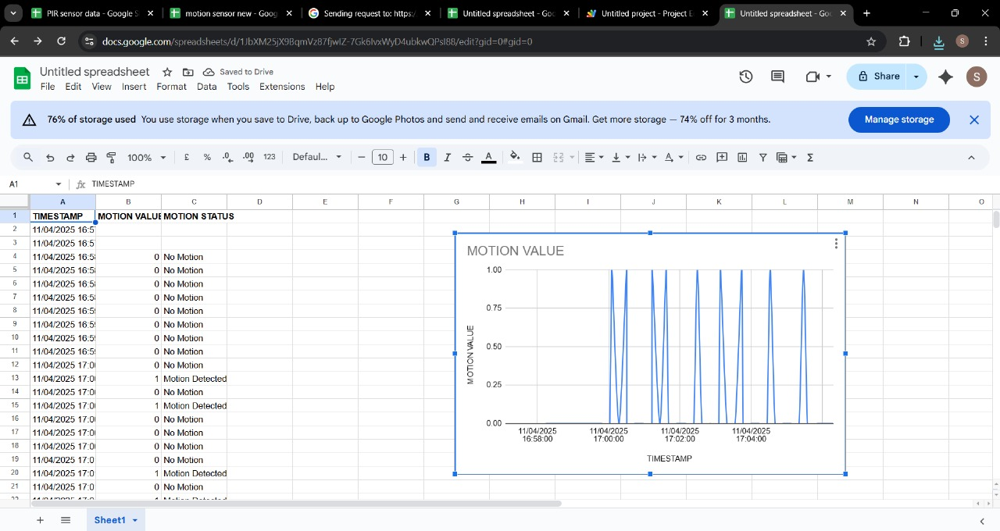

Introduction
The HC-SR501 PIR Motion Sensor is commonly used for motion detection in security, automation and IoT systems.
It detects changes in infrared radiation caused by moving objects and generates a digital HIGH or LOW output signal.
This assignment demonstrates the working of the PIR sensor, oscilloscope testing, ESP8266MOD integration and real-time data logging using Google Sheets.

PIR Sensor Testing
PIR Sensor Specifications
Working Principle
The PIR sensor contains two infrared-sensitive elements. When a moving object enters its detection field, the difference in infrared radiation between the two elements is detected.
The sensor then produces a HIGH digital signal which can be read by a microcontroller such as the ESP8266MOD.
Standalone Testing with Oscilloscope
Before connecting the sensor to the ESP8266MOD, the PIR sensor was tested independently using an oscilloscope.

PIR Sensor Testing

Oscilloscope Testing

DSO Output
Arduino IDE Setup for ESP8266MOD
- Install Arduino IDE from the official site .
- Add the ESP8266 board URL to Arduino IDE Preferences.
- Install the ESP8266 board through Boards Manager.
- Select NodeMCU 1.0 (ESP-12E Module) and the correct COM port.
Connection: PIR Sensor + ESP8266MOD

PIR Sensor and ESP8266MOD Connection
Basic Arduino Code
#define PIR_PIN D5
void setup() {
Serial.begin(115200);
pinMode(PIR_PIN, INPUT);
Serial.println("PIR Motion Sensor Initialized");
}
void loop() {
int motionDetected = digitalRead(PIR_PIN);
Serial.print("Motion Value: ");
Serial.println(motionDetected);
delay(500);
}Serial Monitor Output

Serial Monitor Output
IoT Integration with Google Sheets
- Create a Google Sheet with the headers: Timestamp, Motion Status and Motion Value.
- Open Apps Script from Extensions and add the following code.
function doGet(e) {
var sheet =
SpreadsheetApp
.getActiveSpreadsheet()
.getActiveSheet();
var motionStatus =
e.parameter.motionStatus || "Unknown";
var motionValue =
e.parameter.motionValue || "N/A";
var timestamp = new Date();
sheet.appendRow([
timestamp,
motionStatus,
motionValue
]);
return ContentService
.createTextOutput("Data logged successfully");
}Deploy the script as a Web App with appropriate access permissions and copy the generated URL.
ESP8266 Arduino Code for Google Sheets Logging
#include <ESP8266WiFi.h>
#include <WiFiClientSecure.h>
const char* ssid = "<YOUR_WIFI_NAME>";
const char* password = "<YOUR_WIFI_PASSWORD>";
const char* host = "script.google.com";
const char* fullUrl = "<YOUR_SCRIPT_URL>";
WiFiClientSecure client;
const int pirPin = D5;
void setup() {
Serial.begin(115200);
pinMode(pirPin, INPUT);
WiFi.begin(ssid, password);
while (WiFi.status() != WL_CONNECTED) {
delay(500);
}
client.setInsecure();
}
void loop() {
int motionValue = digitalRead(pirPin);
String motionStatus =
(motionValue == 1)
? "Motion Detected"
: "No Motion";
motionStatus.replace(" ", "%20");
String url =
String(fullUrl)
+ "?motionValue="
+ String(motionValue)
+ "&motionStatus="
+ motionStatus;
if (client.connect(host, 443)) {
client.print(
String("GET ")
+ url
+ " HTTP/1.1\r\n"
+ "Host: "
+ host
+ "\r\n"
+ "Connection: close\r\n\r\n"
);
}
delay(5000);
}Google Sheets Output

Real-time Google Sheets Output
Conclusion
This project demonstrated successful motion detection and real-time IoT logging using an HC-SR501 PIR sensor, ESP8266MOD and Google Sheets.
The assignment provided practical experience in sensor interfacing, microcontroller programming, oscilloscope testing and cloud-based data logging.
Assignment Documentation
View the complete PIR Motion Sensor documentation.